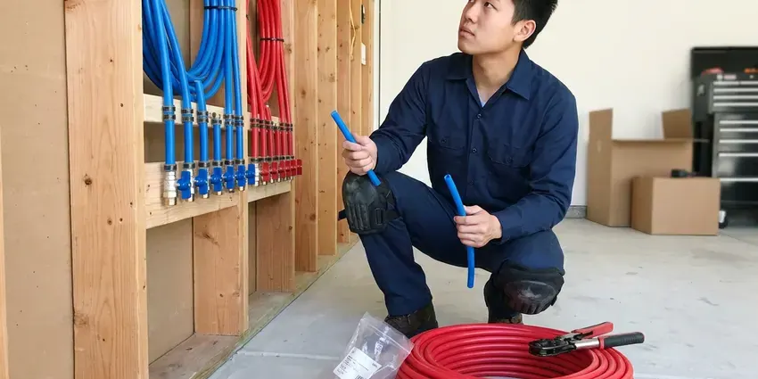

Drains Camera Inspection in Newport, RI
We push a waterproof camera through your line in Newport, RI, mark problems on the surface and give you a copy of the recording.
- Licensed Plumbers
- No Digging to Inspect
- Same-Day Camera Visits
- Above-Ground Locating

Book a Drain Camera Inspection in Newport, RI
You get the video and a plain explanation of what we saw.
Camera Inspections for Buyers and Homeowners in Newport, RI
JPN Plumbing uses self-leveling HD push cameras and sondes to inspect lines from 1 1/2 inch branch drains to 6 inch mains. The picture never flips. Every defect is located from above and marked with paint or a flag, which keeps any later excavation small and accurate.
Work we handle every week:
- Pre-purchase sewer scopes for buyers
- Root intrusion and cracked joint identification
- Sonde locating to mark problem spots from above

Additional Plumbing Maintenance Services in Newport, RI
Our maintenance and specialty plumbing services in Newport, RI protect your home year-round and extend the life of every system.


Customers
Why Choose JPN Plumbing for Drains Camera Inspection in Newport, RI?
We report what the camera shows, whether or not it leads to a repair. That is the whole point. Plenty of scopes come back with minor scale or a few small roots, so the honest answer is often just a cleaning.
- No Digging, The camera enters through a cleanout, toilet or vent.
- Buyer Ready, Pre-purchase reports are written to support repair requests before closing.
- HD Footage, Self-leveling cameras capture clear, upright video of the pipe.
Citywide Coverage
Front yard cleanouts, garage cleanouts and roof vents, we can get a camera in from any of them. No cleanout is fine too. Homeowners, buyers, landlords and businesses across Newport all get the same equipment, the same locate and the same recorded footage when we finish.
Experienced Team
Our camera techs have reviewed thousands of feet of pipe. They read footage fast. They can tell a minor scale deposit from a serious crack, and they sort findings by how urgent they are.
Safety-First Approach
When we pull a toilet to reach the line, it goes back on with a new wax ring. Old rings get tossed. We check the bolts and the supply line, and test it before we leave.
Trusted Certified Newport Plumbing Services Professionals
At JPN Plumbing, we take pride in licensed, certified plumbing services throughout Newport, RI. Credentials matter in this trade. Our plumbers hold recognized industry credentials, and they follow strict safety and quality rules on every repair, installation and maintenance call we run.
Call Us Now PHCC Plumbing Contractor Recognition
PHCC Plumbing Contractor Recognition Better Business Bureau (BBB) Accreditation
Better Business Bureau (BBB) Accreditation Angi Certified Pro
Angi Certified Pro ISO 9001 Quality Management Certification
ISO 9001 Quality Management CertificationWhat a Drain Camera Shows in Newport, RI
Emergency Drain Camera Inspection in Newport, RI
After a sudden backup, the first job is clearing the line. The camera comes right after. Running it the same day in Newport, RI tells you whether the backup was a one-time grease plug or a sign of broken pipe that will back up again within weeks. That changes what you do next.

Camera Inspection Cost vs. Exploratory Digging in Newport, RI
A camera inspection usually costs a few hundred dollars. Exploratory holes cost far more. Without a camera, a crew may open two or three holes trying to find a break that the camera and locator would have pinned to one spot within a foot. With footage and a mark on the ground, the excavation stays small. Less lawn gets torn up.
Camera Inspections for Insurance and HOA Claims in Newport, RI
Insurers usually want proof of the cause after a backup or leak. Video is hard to argue with. Our recording and written findings document roots, breaks or blockages for the adjuster, the HOA or the property manager. We send them in a common format.
Kitchen and Branch Drain Camera Inspection in Newport
Smaller camera heads fit through kitchen, bathroom and laundry lines. They bend through tight turns. We can see grease buildup, scale or a cracked fitting and check the slope. It is smart before a remodel.
Drainage System Pre-Purchase Inspections in Newport, RI
Sewer repairs can cost thousands, and they rarely show up in a home inspection report. Buyers get surprised. A scope before closing in Newport, RI shows you the condition of the lateral and gives you footage you can hand to the seller when asking for a repair or a price adjustment. Clay pipe is the usual worry.
Camera Inspection for Slab Leaks and Under-Slab Drains in Newport, RI
Newer homes and remodels around Newport typically use copper or PEX supply lines, which are easier to maintain. Drains under a slab cannot be seen. Leaks there go unnoticed. A camera shows exactly where an under-slab drain has cracked or separated, and the locate keeps the cut in the floor small. Sometimes a reroute is cheaper.
Sewer Line Camera Inspection in Newport, RI
The main sewer lateral carries everything from your house to the city sewer. Nobody looks at it until it fails. Our camera travels the full length, showing roots, cracks, offsets and sags with their distance from the cleanout. The locator then marks each one on the ground.

Identifying Specific Pipe Damage in Newport
Each kind of damage looks different on camera. Cracks show as dark lines. Offsets show as a lip where one pipe section has dropped below the next, sags show standing water and corroded iron looks rough and flaky. Knowing which one you have sets the repair.
Drains Camera Inspection Near Me in Newport, RI
Home buyers in Newport often have only a few days to get inspections done. Option periods are short. We try to fit sewer scopes in quickly, sending the video and notes the same day.
Searching "drains camera inspection near me" in Newport, RI usually means something keeps going wrong with a drain. JPN Plumbing has camera techs working locally, so most inspections can be booked within a day or two of your call. Active backups get priority.
JPN Plumbing at a Glance
- Licensed and insured plumbers serving Newport, RI
- Same-day appointments and 24/7 emergency response
- Upfront, flat-rate pricing before work begins
- 4.8-star rated by 684+ Rhode Island customers
Newport Map
Newport Information
- Population
- 24,717
- Area codes
- Local
- Service area
- Newport and communities within 40 miles
- Nearby
- Newport East, Wakefield-Peace Dale, Kingston, Tiverton
Rocky glacial soil and ledge are common in Rhode Island, which can make digging for sewer and water lines slower and costlier. A camera inspection in Newport spots offset joints and sags early, before a slow drain turns into a backup or a leak under the slab.
Talk to a Plumber
Call JPN Plumbing for reliable plumbing work done by licensed pros in Newport, RI.
Our Specialized Plumbing Services in Newport, RI
At JPN Plumbing, we handle the full list of plumbing services across Newport, RI. We go from leak detection all the way to full system installations, for homes and commercial buildings, and we do it quickly at a fair price. Explore our core services below:


What Happens During a Sewer Scope in Newport, RI
Most inspections take under an hour. Here is how that time is spent.
Book a Time
Call (401) 364-2507 and we will set an arrival window at your Newport property.
Set Up
The tech protects the area and opens the access point. Blocked lines get cleared first.
Inspect the Line
We guide the camera through the pipe, stopping on every finding. The footage is recorded.
Frequently Asked Questions About Drains Camera Inspection in Newport
Expect $250 to $600 for most inspections. Some cost less. The price depends on how long the line is, how easy it is to reach and whether we need to clear a blockage before the camera can travel the full run. We give you a clear quote up front.
We stand behind our footage and locating marks. It shows what it shows. If a repair we recommend uncovers something different from our report, we work it out with you fairly. That has rarely come up.
Not really. It is a clean job. We usually go in through an outdoor cleanout or one in the garage, and if we have to pull a toilet we lay down drop cloths and reset it with a new wax ring when we finish in your Newport home. No digging is involved.
For judging pipe condition, yes. The gap is big. Store cameras have short cables, weak lights and no locating, and they miss small defects and cannot locate anything. Reading footage also takes experience.
No. The camera is gentle. The head is pushed slowly through the line on a flexible cable, through openings that are already there. Even fragile clay pipe handles it fine.
The usual reason is a repeat clog. Home purchases are common too. Inspections also make sense before a remodel, after root trouble or when someone quotes a costly repair. The footage settles the question.
Often, yes. Rings are the usual one. Once the item gets past the trap, a small camera can find it in the branch line and show us the best opening to reach it from, so we can fish it out without taking the whole drain apart. Fast action helps.
Our trucks carry RIDGID, Wohler and MyTana cameras. Each has its strengths. The smaller heads go through branch drains with tight bends, while the larger self-leveling heads with bright LEDs handle main sewer lines and long runs out to the street. All of them have built-in sondes.
Hear From Customers Who Hired Our Plumbing Experts

Diane F.
My kitchen faucet had dripped for months and I finally got tired of hearing it at night. JPN Plumbing came out the next morning, replaced the cartridge and the O rings, and tightened a loose base that was letting water under the sink.
Faucet Repair · Cranston, RI
Emily R.
The shutoff valve under our kitchen sink snapped off in my hand on a Sunday morning. JPN Plumbing had someone out by early afternoon. He replaced both angle stops with quarter turn valves and showed me where our main shutoff was, which I honestly did not know.
Plumbing Repair · Warwick, RI
Kevin O.
Before buying our house I paid for a sewer camera inspection. JPN Plumbing found a belly in the line that held standing water about forty feet from the cleanout. We used the video to get the sellers to fix it before closing.
Sewer Camera Inspection · Wakefield-Peace Dale, RIPatricia H.
We had a slab leak that two other companies could not find. JPN Plumbing located it in under an hour with a listening device. They rerouted the line through the attic instead of breaking up the floor, so we kept our kitchen tile.
Slab Leak Repair · Newport, RI
Nathan E.
Our tankless heater kept throwing an error code and shutting off mid shower. The tech flushed the heat exchanger, which was full of scale, and replaced a bad flow sensor. Hot water has been steady for half a year now.
Water Heater Repair · Warwick, RIJames P.
Our restaurant had a slow leak at the hand sink that was rotting the cabinet base. JPN Plumbing came in at six in the morning before prep, replaced the trap and both supply lines, and was packed up before my first cook clocked in.
Commercial Plumbing · Newport, RI